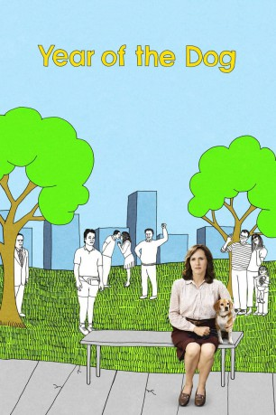

IMDB-Wertung: 6.1 / 10
IMDB-Wertung: 6.1 / 10  Metascore:
Metascore: 
Der Film handelt von einer Sekretärin, deren Leben sich nach dem Tod ihres geliebten Hundes auf unerwartete Weise ändert.
Alternativ: Year of the Dog (Englischer Titel)
 IMDB-Wertung: 6.1 / 10 Metascore:
Der Film handelt von einer Sekretärin, deren Leben sich nach dem Tod ihres geliebten Hundes auf unerwartete Weise ändert.
Jahr: 2007
Dauer: 97 Minuten
FSK:
Land: USA Studio: Paramount VantageTonspuren: - , - ,
Untertitel:
Auflösung: 1080p (1920x1080) Größe: 7198 MB
Regisseur:  Mike White
Mike White
Drehbuch: Mike White
Soundtrack: Christophe Beck
Darsteller:
 Molly Shannon als Peggy
Molly Shannon als Peggy Laura Dern als Bret
Laura Dern als Bret Regina King als Layla
Regina King als Layla Tom McCarthy als Pier
Tom McCarthy als Pier Josh Pais als Robin
Josh Pais als Robin John C. Reilly als Al
John C. Reilly als Al Peter Sarsgaard als Newt
Peter Sarsgaard als Newt Dale Godboldo als Don
Dale Godboldo als Don Audrey Wasilewski als
Audrey Wasilewski als  Sonya Eddy als
Sonya Eddy als Datei: X:\2007(G-M)\Jahr des Hundes, Das (2007, FSK, 1920x1080).mkv seit 26.06.2019
Festplatte: HD 2007(A-Z)-2008(A-F)
 Es gibt insgesamt 64 Filme in der Gruppe '2007(G-M)'
Es gibt insgesamt 64 Filme in der Gruppe '2007(G-M)'